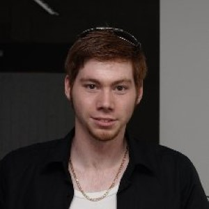

Shift happens: Crowdsourcing metrics and test datasets beyond ImageNet#
ICML 2022 workshop
We aim to create a community-built benchmark suite for ImageNet models comprised of new datasets for OOD robustness and detection, as well as new tasks for existing OOD datasets.
While the popularity of robustness benchmarks and new test datasets increased over the past years, the performance of computer vision models is still largely evaluated on ImageNet directly, or on simulated or isolated distribution shifts like in ImageNet-C.
Goal: This workshop aims to enhance and consolidate the landscape of robustness evaluation datasets for computer vision and collect new test sets and metrics for quantifying desirable or problematic properties of computer vision models. Our goal is to bring the robustness, domain adaptation, and out-of-distribution detection communities together to work on a new broad-scale benchmark that tests diverse aspects of current computer vision models and guides the way towards the next generation of models.
Overview over the benchmark suite: You can contribute tasks and corresponding datasets highlighting interesting aspects of ImageNet-scale models. We will evaluate current and future models on the benchmark suite, testing their robustness, calibration, odd detection, and consistency, and make the results intuitively accessible in the form of scorecards. |
All accepted submissions will be part of the open-source shifthappens benchmark suite. This will ensure that after the workshop all benchmarks are accessible to the community.
A central part of our package is to facilitate the evaluation of models on different datasets testing their generalization capabilities and providing fine-grained information on model performance using score-cards. To make sure all contributing authors as well as all authors of used (modified or not) pre-existing datasets will get credit for their efforts, we will release a bibtex file and a ‘cite’ macro for LaTeX which will include all contributions and underlying works.
In addition, participants will have the opportunity to co-author a paper summarizing the benchmark suite and all included contributions.
Focus Topics#
Submissions to the benchmark suite will focus on datasets and evaluation algorithms falling into one or more of the categories below:
Robustness to domain shifts: A labeled dataset where the labels are (a subset of) the 1000 labels of ImageNet-2012. Optionally, model calibration, uncertainty, or open set adaptation can be tested. We especially encourage submissions focusing on practically relevant distribution shifts.
Out-of-distribution detection: A labeled or unlabeled dataset of images that do not contain objects from any of the 1000 ImageNet-2012 classes.
New robustness datasets: Beyond the standard robustness evaluation settings (with covariate shift, label shift, …), the workshop format enables submission of datasets that evaluate non-standard metrics such as the consistency of predictions, influence of spurious correlations in the dataset.
New model characteristics: Metrics and evaluation techniques that help examine the strengths, weaknesses and peculiarities of models in newly highlighted respects. Evaluations can utilize established datasets (or subsets thereof) or come with their own dataset.
Submissions#
The benchmark suite will be available on GitHub. The documentation for the benchmark’s API is available here. Please see our Call for Submissions for more details.
For general questions about preparations of submissions, clarifications around the submission score and
discussions about the shifthappens API, please feel free to write us as shifthappens@bethgelab.org
or join our slack channel.
Important Deadlines#
You can find all deadlines as well as the submission page also directly on OpenReview.
Abstract Deadline: June 3, 2022 (previously: May 27)
Submission Deadline for all extended abstracts and full submissions: June 3, 2022 (previously: May 27)
Special submission Deadline for all authors of the Neurips Datasets & Benchmarks Track submissions: June 9, 2022
Reviews Posted: June 13, 2022
Acceptance Notification: June 13, 2022
Camera and Dataset Ready: July 1, 2022
ICML 2022 Workshop dates: July 22
Please note that it is not required to post the final dataset by the submission deadline since we are interested in new ideas for feasible datasets. It is sufficient to start working on final dataset collections after the acceptance notification until the camera ready deadline.
Additional information about submission dates and the submission format can be found in Call for Submissions. Also, please consider our Call for Reviewers.
Prizes and Travel Grants#
We can offer up to 5 free registrations to the ICML for outstanding submissions.
Invited Speakers#
Aleksander Mądry is the Cadence Design Systems Professor of Computing at MIT, leads the MIT Center for Deployable Machine Learning as well as is a faculty co-lead for the MIT AI Policy Forum. His research interests span algorithms, continuous optimization, and understanding machine learning from a robustness and deployability perspectives. is the Cadence Design Systems Professor of Computing at MIT, leads the MIT Center for Deployable Machine Learning as well as is a faculty co-lead for the MIT AI Policy Forum. His research interests span algorithms, continuous optimization, and understanding machine learning from a robustness and deployability perspectives.
Alexei Efros is a professor at EECS Department at UC Berkeley, where he is part of the Berkeley Artificial Intelligence Research Lab (BAIR). Before that, he spent nine years on the faculty of the Robotics Institute at CMU. Starting in 2007, Alexei have also been closely collaborating with Team WILLOW at École Normale Supérieure / INRIA in Paris. The central goal of Alexei’s research is to use vast amounts of unlabelled visual data to understand, model, and recreate the visual world around us.
Chelsea Finn is an Assistant Professor in Computer Science and Electrical Engineering at Stanford University. Her lab, IRIS, studies intelligence through robotic interaction at scale, and is affiliated with SAIL and the ML Group. Chelsea also spends time at Google as a part of the Google Brain team. She is interested in the capability of robots and other agents to develop broadly intelligent behavior through learning and interaction.

Lucas Beyer grew up in Belgium wanting to make video games and their AI. He went on to study mechanical engineering at RWTH Aachen in Germany, where he did a PhD in robotic perception/computer vision there too, and is now researching representation learning and vision backbones at Google Brain in Zürich.
Ludwig Schmidt is an assistant professor in the Paul G. Allen School of Computer Science & Engineering at the University of Washington. Ludwig’s research interests revolve around the empirical and theoretical foundations of machine learning, often with a focus on datasets, evaluation, and reliable methods. Ludwig completed his PhD at MIT under the supervision of Piotr Indyk and was a postdoc at UC Berkeley with Benjamin Recht and Moritz Hardt. Ludwig received a Google PhD fellowship, a Microsoft Simons fellowship, a new horizons award at EAAMO, a best paper award at ICML, and the Sprowls dissertation award from MIT.
More speakers will be announced soon!
Organizers#
Evgenia Rusak